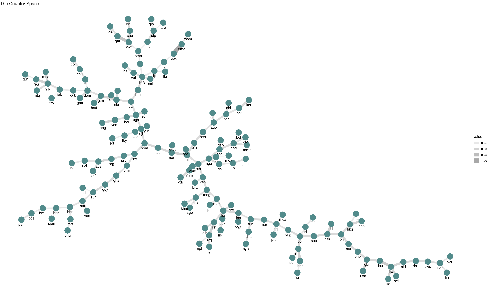
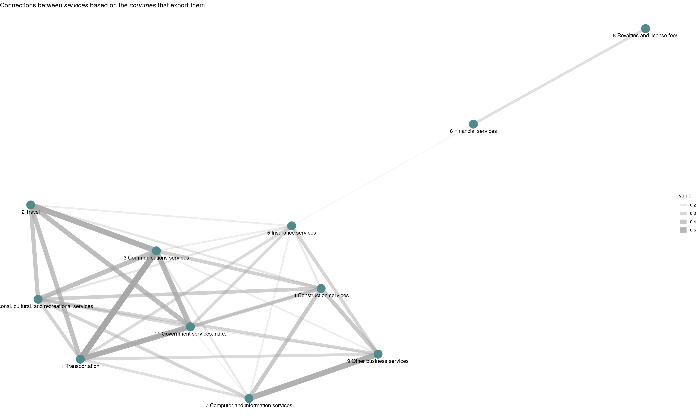

basic-usage.RmdI’ll use this demo dataset to illustrate the essential usage of the functions within this package:
## # A tibble: 736 x 3
## country product value
## <chr> <chr> <dbl>
## 1 Albania 1 Transportation 200490000
## 2 Algeria 1 Transportation 672372922
## 3 Angola 1 Transportation 32634214
## 4 Azerbaijan 1 Transportation 1095425000
## 5 Argentina 1 Transportation 2175160000
## 6 Australia 1 Transportation 4340600000
## 7 Bahamas 1 Transportation 95553064
## 8 Bangladesh 1 Transportation 412300000
## 9 Armenia 1 Transportation 188458900
## 10 Bhutan 1 Transportation 2962863685
## # … with 726 more rowsYou can obtain RCA with revealed_comparative_advantage():
rca <- revealed_comparative_advantage(
trade_data = services_trade_2016$services_trade_2016_tibble,
country = "country",
product = "product",
value = "value"
)
# 5x5 preview
rca[1:5,1:3]## 5 x 3 sparse Matrix of class "dgCMatrix"
## 1 Transportation
## Albania .
## Algeria 1
## Angola .
## Argentina 1
## Armenia .
## 10 Personal, cultural, and recreational services
## Albania 1
## Algeria .
## Angola .
## Argentina 1
## Armenia 1
## 11 Government services, n.i.e.
## Albania .
## Algeria 1
## Angola .
## Argentina .
## Armenia 1And also you can obtain it in tabular version:
rca_tbl <- revealed_comparative_advantage(
trade_data = services_trade_2016$services_trade_2016_tibble,
country = "country",
product = "product",
value = "value",
tbl_output = T
)
rca_tbl## # A tibble: 735 x 3
## country product value
## <chr> <chr> <dbl>
## 1 Albania 1 Transportation 0
## 2 Albania 10 Personal, cultural, and recreational services 1
## 3 Albania 11 Government services, n.i.e. 0
## 4 Albania 2 Travel 1
## 5 Albania 3 Communications services 1
## 6 Albania 4 Construction services 0
## 7 Albania 5 Insurance services 0
## 8 Albania 6 Financial services 0
## 9 Albania 7 Computer and information services 0
## 10 Albania 8 Royalties and license fees 0
## # … with 725 more rowsAnother possibility, not used to build networks from bipartite relations, is to obtain RCA as a matrix or tibble without discretization:
rca_decimal <- revealed_comparative_advantage(
trade_data = services_trade_2016$services_trade_2016_tibble,
country = "country",
product = "product",
value = "value",
discrete = F
)
# 5x3 preview
rca_decimal[1:5,1:3]## 5 x 3 sparse Matrix of class "dgCMatrix"
## 1 Transportation
## Albania 0.5102272
## Algeria 1.3335177
## Angola 0.2690996
## Argentina 1.0111489
## Armenia 0.6893952
## 10 Personal, cultural, and recreational services
## Albania 1.2249349
## Algeria 0.2708899
## Angola .
## Argentina 2.8673255
## Armenia 1.8189723
## 11 Government services, n.i.e.
## Albania 0.8920782
## Algeria 5.0052899
## Angola .
## Argentina 0.7883701
## Armenia 1.0213973rca_decimal_tbl <- revealed_comparative_advantage(
trade_data = services_trade_2016$services_trade_2016_tibble,
country = "country",
product = "product",
value = "value",
tbl_output = T,
discrete = F
)
rca_decimal_tbl## # A tibble: 735 x 3
## country product value
## <chr> <chr> <dbl>
## 1 Albania 1 Transportation 0.510
## 2 Albania 10 Personal, cultural, and recreational services 1.22
## 3 Albania 11 Government services, n.i.e. 0.892
## 4 Albania 2 Travel 2.28
## 5 Albania 3 Communications services 3.71
## 6 Albania 4 Construction services 0.150
## 7 Albania 5 Insurance services 0.173
## 8 Albania 6 Financial services 0.0138
## 9 Albania 7 Computer and information services 0.0589
## 10 Albania 8 Royalties and license fees 0.0126
## # … with 725 more rowsYou can compute both Economic Complexity Index (ECI) and Product Complexity Index (PCI) by using complexity_measures(). The calculations methods are reflections, eigenvalues and fitness (default). See (Hausmann et al. 2014) and (Mariani et al. 2015) for the methodological details.
cm_reflections <- complexity_measures(
rca = rca,
method = "reflections",
tbl_output = T
)
cm_reflections$economic_complexity_index## # A tibble: 80 x 2
## country value
## <chr> <dbl>
## 1 Seychelles 3.44
## 2 Philippines 3.21
## 3 Israel 2.24
## 4 China 1.63
## 5 Costa Rica 1.63
## 6 Singapore 1.60
## 7 Japan 1.24
## 8 Poland 1.24
## 9 Russian Federation 1.24
## 10 Serbia 1.24
## # … with 70 more rows## # A tibble: 11 x 2
## product value
## <chr> <dbl>
## 1 9 Other business services 1.74
## 2 7 Computer and information services 1.44
## 3 8 Royalties and license fees 0.849
## 4 4 Construction services 0.140
## 5 6 Financial services 0.0313
## 6 5 Insurance services -0.187
## 7 10 Personal, cultural, and recreational services -0.320
## 8 1 Transportation -0.387
## 9 3 Communications services -0.846
## 10 11 Government services, n.i.e. -0.937
## 11 2 Travel -1.52cm_eigenvalues <- complexity_measures(
rca = rca,
method = "eigenvalues",
tbl_output = T
)
cm_eigenvalues$economic_complexity_index## # A tibble: 80 x 2
## country value
## <chr> <dbl>
## 1 Seychelles 3.46
## 2 Philippines 3.25
## 3 Israel 2.28
## 4 Costa Rica 1.67
## 5 China 1.63
## 6 Singapore 1.55
## 7 Poland 1.26
## 8 Russian Federation 1.26
## 9 Serbia 1.26
## 10 TFYR of Macedonia 1.26
## # … with 70 more rows## # A tibble: 11 x 2
## product value
## <chr> <dbl>
## 1 9 Other business services 1.80
## 2 7 Computer and information services 1.51
## 3 8 Royalties and license fees 0.668
## 4 4 Construction services 0.184
## 5 6 Financial services -0.0766
## 6 5 Insurance services -0.202
## 7 10 Personal, cultural, and recreational services -0.272
## 8 1 Transportation -0.365
## 9 3 Communications services -0.821
## 10 11 Government services, n.i.e. -0.940
## 11 2 Travel -1.48cm_fitness <- complexity_measures(
rca = rca,
method = "fitness",
tbl_output = T
)
cm_fitness$economic_complexity_index## # A tibble: 80 x 2
## country value
## <chr> <dbl>
## 1 USA 39.6
## 2 Japan 39.2
## 3 Singapore 0.422
## 4 Lebanon 0.422
## 5 South Africa 0.422
## 6 China 0.000167
## 7 Poland 0.000156
## 8 Russian Federation 0.000156
## 9 Serbia 0.000156
## 10 TFYR of Macedonia 0.000156
## # … with 70 more rows## # A tibble: 11 x 2
## product value
## <chr> <dbl>
## 1 8 Royalties and license fees 10.9
## 2 6 Financial services 0.0835
## 3 7 Computer and information services 0.00000450
## 4 9 Other business services 0.00000401
## 5 5 Insurance services 0.00000263
## 6 4 Construction services 0.00000238
## 7 10 Personal, cultural, and recreational services 0.00000116
## 8 3 Communications services 0.000000499
## 9 1 Transportation 0.000000488
## 10 11 Government services, n.i.e. 0.000000417
## 11 2 Travel 0.0000000716Proximity matrices are used to create both country-country and product-product networks. Using proximity_matrices() is straightforward:
pro <- proximity(
rca = rca,
diversity = cm_fitness$diversity,
ubiquity = cm_fitness$ubiquity,
tbl_output = T
)
pro$proximity_countries## # A tibble: 2,683 x 3
## from to value
## <chr> <chr> <dbl>
## 1 Angola Albania 0.333
## 2 Argentina Albania 0.4
## 3 Armenia Albania 0.5
## 4 Aruba Albania 0.333
## 5 Australia Albania 1
## 6 Azerbaijan Albania 0.333
## 7 Bahamas Albania 0.333
## 8 Bangladesh Albania 0.25
## 9 Belarus Albania 0.25
## 10 Belize Albania 0.667
## # … with 2,673 more rows## # A tibble: 51 x 3
## from to value
## <chr> <chr> <dbl>
## 1 10 Personal, cultural, and recreational services 1 Transportation 0.326
## 2 11 Government services, n.i.e. 1 Transportation 0.512
## 3 2 Travel 1 Transportation 0.434
## 4 3 Communications services 1 Transportation 0.581
## 5 4 Construction services 1 Transportation 0.349
## 6 5 Insurance services 1 Transportation 0.279
## 7 6 Financial services 1 Transportation 0.0233
## 8 7 Computer and information services 1 Transportation 0.256
## 9 8 Royalties and license fees 1 Transportation 0.0233
## 10 9 Other business services 1 Transportation 0.279
## # … with 41 more rowsThe proximity_networks() function is designed to use igraph for the internal computations and also to pass proximity-based networks to igraph, ggraph or export to Cytoscape by saving the output as csv/tsv.
To create some reduced networks I’ll use a high proximity cutoff:
net <- networks(
proximity_countries = pro$proximity_countries,
proximity_products = pro$proximity_products,
countries_cutoff = 0.7,
products_cutoff = 0.1,
tbl_output = T
)
net$network_countries## # A tibble: 215 x 3
## from to value
## <chr> <chr> <dbl>
## 1 Australia Mauritius 1
## 2 Australia Colombia 0.75
## 3 Australia Lebanon 0.75
## 4 Australia Samoa 0.75
## 5 Australia Uruguay 0.75
## 6 Australia Greece 0.75
## 7 Australia Zambia 0.75
## 8 Australia Albania 1
## 9 Australia New Zealand 0.667
## 10 Mauritius Colombia 0.75
## # … with 205 more rows## # A tibble: 36 x 3
## from to value
## <chr> <chr> <dbl>
## 1 11 Government services, n… 3 Communications services 0.488
## 2 11 Government services, n… 4 Construction services 0.237
## 3 11 Government services, n… 10 Personal, cultural, and recreationa… 0.289
## 4 11 Government services, n… 2 Travel 0.453
## 5 11 Government services, n… 5 Insurance services 0.289
## 6 11 Government services, n… 7 Computer and information services 0.132
## 7 11 Government services, n… 9 Other business services 0.158
## 8 11 Government services, n… 1 Transportation 0.512
## 9 3 Communications services 4 Construction services 0.341
## 10 3 Communications services 10 Personal, cultural, and recreationa… 0.439
## # … with 26 more rowsJust a two examples with ggraph:
library(igraph)
library(ggraph)
library(magrittr)
set.seed(200100)
net$network_countries %>%
graph_from_data_frame(directed = F) %>%
ggraph(layout = "kk") +
geom_edge_link(aes(edge_alpha = value, edge_width = value),
edge_colour = "#a8a8a8") +
geom_node_point(color = "darkslategray4", size = 8) +
geom_node_text(aes(label = name), vjust = 2.2) +
ggtitle(
expression(paste("Connections between",
italic(" countries "),
"based on the",
italic(" services "),
"they export"))) +
theme_void()
net$network_products %>%
graph_from_data_frame(directed = F) %>%
ggraph(layout = "kk") +
geom_edge_link(aes(edge_alpha = value, edge_width = value),
edge_colour = "#a8a8a8") +
geom_node_point(color = "darkslategray4", size = 8) +
geom_node_text(aes(label = name), vjust = 2.2) +
ggtitle(
expression(paste("Connections between",
italic(" services "),
"based on the",
italic(" countries "),
"that export them"))) +
theme_void()
Hausmann, Ricardo, César Hidalgo, Sebastián Bustos, Michele Coscia, Alexander Simoes, and Muhammed Yildirim. 2014. The Atlas of Economic Complexity: Mapping Paths to Prosperity. MIT Press. https://doi.org/10.7551/mitpress/9647.001.0001.
Mariani, Manuel, Alexandre Vidmer, Matsúš Medo, and Yi-Cheng Zhang. 2015. “Measuring Economic Complexity of Countries and Products: Which Metric to Use?” The European Physical Journal B 88 (11). Springer: 293. https://doi.org/10.1140/epjb/e2015-60298-7.